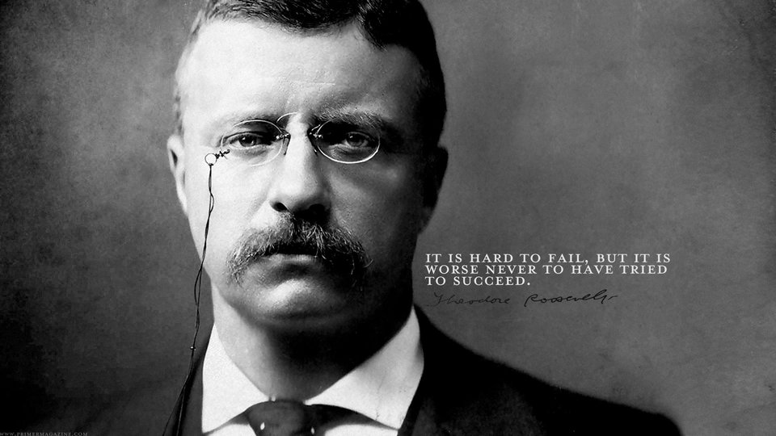

Theodore Roosevelt

Theodore Roosevelt with one of his most famous quotes.
- Theodore Roosevelt was the 26th President of the United States.
- He was born on October 27, 1858 in New York City.
- In his early life, he had severe debilitating asthma.
- He learned boxing after getting beat up by a bunch of kids when he was young.
- He created the Bull Moose Party
- He was the first US president to leave the country in 1906 when he venture to Panama Canal
- He was blind in his left eye because of boxing match injury
- In 1912, he was shot while campaigning for president, and he still did his speech
- He pushed for the building of the Panama Canal which shortened time for trade
- He was known as the Trust Buster for breaking a lot of the trusts that allowed companies to pay extremely low wages
- He increased regulation and safety standards for food and medicine
- He formed a volunteer calvary regiment known as the "Rough Riders". He became known as a famous war hero for his charge up San Juan Hill in Cuba.